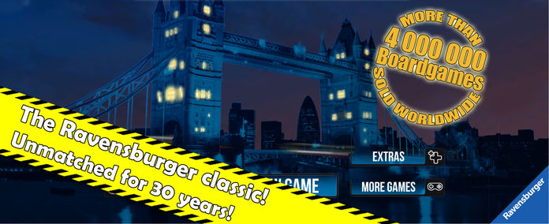
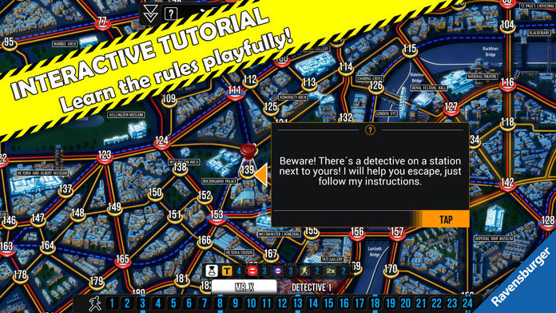

Introduction au jeu

Scotland Yard est un jeu informatique d'inférence produit par DTP Entertainment. Scotland Yard, 2-6 personnes, une personne est un fugitif et les autres sont des policiers. Il est plus difficile de gagner que les fugitifs. L'inconvénient est que les opinions de la police ne sont pas uniformes et il est facile de devenir une situation où une personne commande plusieurs personnes. Devenez policier
Image du jeu


- 